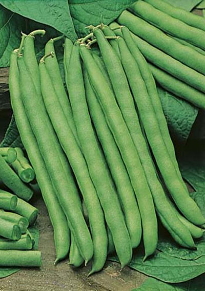

Phaseolus vulgaris 'Blue Lake'
Type: Stangbønne
Højde: 200 cm
Såafstand: 12 cm
Rækkeafstand: 45 cm
Sådybde: 3 cm
Lysforhold: Fuld sol
Forspiring: Maj Juni
Udplantning/såning på friland: Juni
Spiring efter: ca. 10 dage
Moden til høst efter: ca. 63 dage
Beskrivelse: En fin sort af stangbønne. Giver stort udbytte på lille dyrkningsareal. Høst ofte, bælgen skal være udvokset, men slank. Bælgene spises kogte. Kan med fordel fryses, let blancherede. Trives bedst i en veldrænet, muldrig og fugtbevarende jord et læfyldt sted. Vandes rigeligt. Planten kræver støtte.
Forspiring: 2-3 uger før udplantning efter sidste frost. Anb. specielt til kolde områder. Så 1 frø/potte. Holdes fugtigt. Stilles varmt (+25°C). Efter spiring stilles de lyst ved stuetemp. Frilandssåning: Så ikke før jordtemp. er 15 °C. Skyl frøene omhyggeligt før såning. Vand i sårenden. Hold derefter fugtig. Dæk gerne med fiberdug.